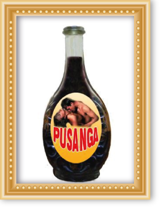

Realizamos ritos ancestrales de áfrica, utilizamos este tipo de macumba para alejar a los enemigos de tu camino para siempre.
El PAGO A LOS APUS es un antiguo ritual Inca practicado para gozar de la protección de ellos en nuestras vidas.
EL PAGO A LA PACHAMAMA este ritual en donde se consagra a la tierra con el propósito de pagarle la buena fortuna y los éxitos por venir. Su práctica es ancestral y tradicional.
Aun hoy se practica por los conocedores y expertos maestros en muchas partes del Perú y Bolivia. Visite a Giordano y Verenice y compruébelo Ud. mismo. Hay muchas personas sensibles que absorben rápidamente la maldad y cualquier tipo de brujería y hechicería provocada protégete con estos rituales de magia blanca de protección.


La quiromancia y quirología se basan en el hecho de que se puede conocer la personalidad, la salud y los hechos pasados a través de las huellas que dejan en las palmas de las manos, la forma de los dedos, de las uñas, de los montes que se forman bajo el nacimiento de los dedos, etc.
La Quiromancia pretende, a través de este conocimiento obtenido a partir de la lectura de manos adivinar el destino futuro de la persona.
Realizamos sanaciones y curaciones en mesa santera la cual está rodeada de santos milagrosos.
Curamos con imposición de manos cualquier tipo de dolencia o enfermedad sin diagnostico medico, desconocida para la ciencia humana, pero conocida para el ocultismo y las magias ancestrales.
Ud. Solo debe tener FE y confianza en nosotros y en nuestros conocimientos ancestrales. Nosotros prepararemos el camino que ha de llevarte a tu plena felicidad. Toma nuestras manos que no permitiremos que sigas en la angustia de ver perdida tu relación, destruido tu hogar, tu negocio, tu futuro. Nosotros te enseñaremos que todo es posible con fe y convicción.
La santa muerte te protege y te cuida de todo daño y obstáculo que se te presente ya que su poder es sumamente grande. Confía…
La velomancia es un estudio dentro de las prácticas de la predicción, a través de la vela se interpreta la caída de la gota y el movimiento de llama. Es un tipo de adivinación como podría serlo el oráculo. Es algo muy concreto que sirve única y exclusivamente para preguntas concretas. En otras ocasiones también puede usarse como un elemento complementario a cualquier otro tipo de ritual u ofrenda.
Siempre es más productiva por ejemplo echar las cartas con una vela ya que acompaña la energía, funciona como un suplemento.
 La puzanga es un perfume místico que aumenta al 100 % el poder personal de la seducción y atraer al ser amado o la persona deseada. Esto le da la seguridad de tenerla a sus pies y poder dominarla cuanto se desee. El efecto es subconsciente ya que actúa a nivel hormonal, la persona para la cual se desea el efecto sentirá un pleno deseo sexual y una atracción muy fuerte hacia quien utiliza la puzanga.
Desde los sitios más recónditos de la selva virgen se extraen las mejores hierbas hojas y plantas vírgenes del interior de nuestra selva en combinación con las flores y plantas aromáticas de la sierra huancabambina, se produce para el Perú y el mundo la poción más poderosa, el elixir especialmente trabajado para atraer al ser amado. Despertando los instintos más profundos, las feromonas despertaran con estas sustancias especiales haciendo que tu pareja regrese a ti con muchísima pasión y no desee separarse de ti jamás.
La Puzanga se ha utilizado desde tiempos inmemoriales para atraer y despertar el instinto del ser amado, atrayéndolo de forma efectiva e instintiva ya que este producto despierta el subconsciente impidiendo que la razón pueda darse cuenta de lo que sucede ya que las feromonas actuaran eficazmente ante el estimulo de este producto.
Nuestra persistente labor en investigar y recolectar estas finas hierbas y procesarlas por medio del macerado ancestral, da como resultado este elixir especial, sin permitir que pierda sus propiedades tradicionales y este poder ancestral que recibimos de nuestros antepasados.
Esto garantiza totalmente su efectividad y la solución a los problemas que puedan estar enfriando su relación.
Este producto al ser natural no produce ningún efecto secundario. No es un embrujo ni un hechizo, lo que se utiliza es el poder de la naturaleza para poder despertar los instintos naturales para poder atraer eficazmente e incrementar el poder de seducción. La puzanga no se relaciona con ningún tipo de embrujo.


El crucifijo es considerado por la tradición católica como una defensa contra las fuerzas demoniacas, y el signo sagrado de Cristo como vencedor sobre el mal.
Se tienen registros antiguos en grimorios de Magia, sobre la protección efectiva del crucifijo ante la hechicería más perversa.

El hamsa o Khamsa, también conocido como la Mano de Fatima o de Miriam se muestra con la forma de la palma de la mano y es ampliamente utilizado en el Medio Oriente y en los países de Magreb al norte de África.
La Mano de Fatima se utiliza principalmente como joyería o se cuelga en puertas y ventanas para alejar al Mal de Ojo.
El Nazar es un amuleto de protección contra el "Mal de Ojo" o las malas intenciones que otros puedan desearnos. Se utiliza en todo el mundo especialmente en Turquía, Irán y Grecia.
Se le puede encontrar en colguijes para decoración o en ropa y accesorios. Algunas personas se refieren a este talisman también como "El ojo Azul"

El omamori, de origen japonés, es un amuleto de protección contra el mal. La palabra omamori significa protección.
Está hecho de tela y en su interior se encuentran papeles o piezas de maderas con encomiendas o deseos escritos santificados. Se dice que es de mala suerte abrir el omamori y descubrir su interior.

Talladas en piedra Ágata, estos amuletos son de origen muy antiguo y se utilizan en brazaletes o collares y son consideradas como portadoras de beneficio espiritual.
Las culturas tibetanas las cubren de polvo medicinal el cual se adhiere a sus relieves para transmitir su poder benefactor.

Las medallas católicas, incluyendo la Vade Retro Satana que incluye la fórmula para alejar a Satanás son de uso muy popular e inclusive han sido abaladas por el Papá Benedicto XVI.
El Vade Retro Satana es un amuleto que también es utilizado a través de la voz humana. Mencionar esas palabras alejará al demonio y se utiliza en prácticas exorcistas.

Las Cartas Místicas protegen a su portador de acuerdo a los cuatro elementos astrológicos universales que son el Aire (que representa el conocimiento y la sabiduría), la Tierra (que conduce la fertilidad y la prosperidad fruto de nuestro trabajo), el Agua (que controla nuestras emociones y da luz a nuestra belleza) y el Fuego (que nos protege de las malas intenciones y nos da fuerza y valor para afrontar cualquier situación.
Las Cartas Místicas pueden utilizarse con los hechizos de las Cartas o llevarse consigo para obtener protección.
Colocarlas bajo la almohada darán respuesta a nuestras interrogantes a través de los sueños.

Está comprobado que los talismanes son herramientas espirituales que ayudan a convertir la energía negativa en energía positiva. Esto provoca una acción de lavado que re dinamiza la energía estancada y negativa, y la convierte en energía fresca y positiva. Talismanes como la orgonita están hechos de resina orgánica y virutas metálicas inorgánicas.
Otros talismanes poderosos son aquellos que contienen cristales de cuarzo, material de gran alcance para la limpieza de la energía y el almacenamiento de intenciones. Además, existen otras piedras preciosas que influyen en las propiedades de los talismanes. Cualquier piedra preciosa tendrá un efecto poderoso sobre su portador, ya que son dispositivos de alta energía.
Ejemplos de talismanes poderosos
Turquesa – Esta es una piedra de gran alcance, de usos múltiples que van desde curación a mejorar la creatividad

Turmalina Negra – Esta piedra repele la energía psíquica negativa y te mantiene conectado a tierra.
Hematita – Similar a la turmalina negra, también ayuda a impulsar la autoconfianza.
Rodocrosita y cuarzo rosa – Para atraer el amor romántico.

Lapislázuli – Para aumentar tus poderes psíquicos y darte claridad espiritual. Muy útil para trabajar con hechizos caseros.

Granate – Atrae dinero, aumenta el éxito en los negocios y alivia la depresión.

Los colgantes y talismanes de orgonita pueden ayudarte a aumentar tus poderes mágicos pues te rodean con energía positiva.
ENLACES DE INTERES:
http://petitabruixa.blogspot.pe/2006/06/baos-con-sal-limpieza-y-proteccin.html
http://contemplandoelvacio.blogspot.pe/2012/07/limpieza-energetica-del-huevo_24.html
http://tagomago.galeon.com/aficiones1988819.html